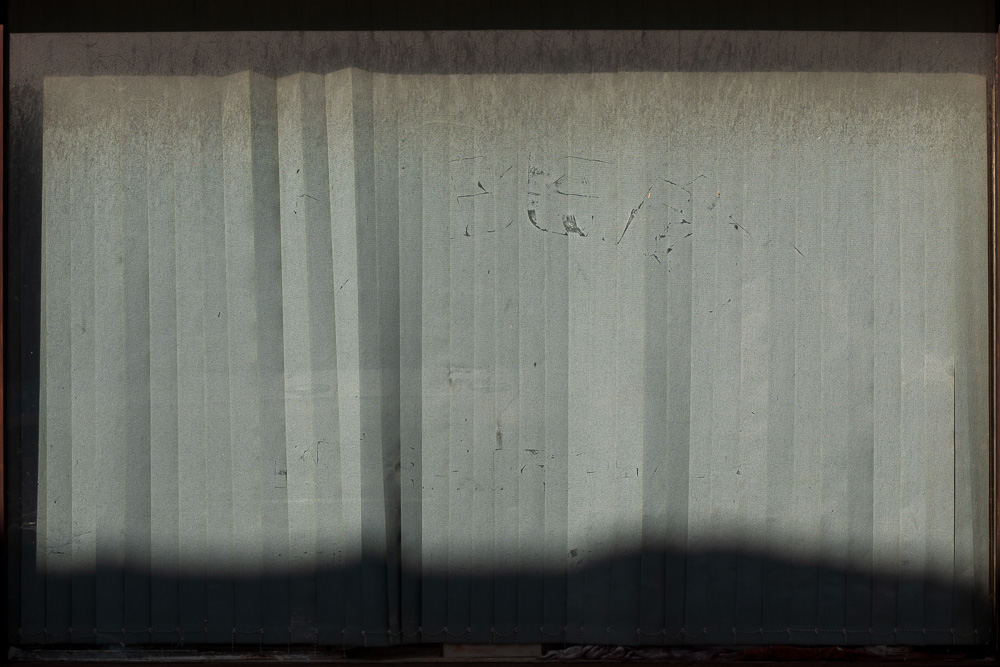

Gradually, we grew out of our past, explained away halos and beasts and cities of clouds. History, after all, is written by those that live in the present.
But it’s still there, that old world. Beneath our own, like a first coat of paint, glinting through chips and scratches.
A dragon’s tail where the TV bumped the wall. Constellations in curtains and hand-blown glass. Ancient actors’ footprints in the dust of vacant stages.
In the subtle bones of the sun-bleached things, we find distant familiarity, dormant blood-memory. Echoes of old in the cracks of the new.
Lingermyth (book pdf, 2022) is a collection of those echoes. Assembled from hundreds of walks across Cornwall and Devon, UK, Wisconsin, USA, and Costa Blanca, Spain, it depicts a world removed from our own, a world glimpsed in reflections and walls, in old paint and houseplants and long shadows on the ground.

Like a street photographer, Petrie scours the landscape for moments. His images are candid, ephemeral results of wandering and discovering, but unlike a street photographer, his subjects are primordial and stoic.
Lingermyth is full of intimate photographs of immovable things, at once fleeting and timeless. This presents a contrast: despite the apparent permanence of their subjects, each image feels like a precious glimpse.
One consistency in Lingermyth is a lack of people. At first, this seems like an oversight, a mix of laziness and cowardice, but the book’s power would be lessened by such overt evidence of reality.
It is not the lack of people that might be expected from, say, a book of wilderness photography. Lingermyth does not contain wilderness. Its images show very human places, full of very human objects; it’s just that those places are always vacant.
Lingermyth relies on this juxtaposition to let the viewer peek beyond the edge of the image. It does contain people, but they exist in a sort of lingo between the images, implied by shadows and stains and flowers in the windows.
Like tracks in the mud, its images hint at presence, providing more questions than answers. Something, someone, was here, it says. When? Where did they go? Will they be back?
These images, like street windows passed on a brisk evening's walk, are a sort of synecdoche: from a seed of familiarity, we glimpse entire worlds at the edge of our own.
These worlds we find in the cracks of our own are implied and imagined, no more real than a bedtime story, and yet they are far more emotionally true, pull far stronger on the strings of our heart, than actual fact. Their potency is their unknowability; reality would only disappoint.
Many photographers like to think of their work as a kind of making. Here is an image I’ve made, they say, to emphasise their artistry. These photographs, however, are definitively found.
They are spontaneous discoveries, glimpses of elsewhere removed of their context, a product as well as an impetus of longing. Nothing here is constructed; it is the viewer who constructs.
These images are sparse and lonely and betray very little of their grounding in reality. It is often uncertain whether image pairs span continents or whether they belong to the same faded wall, and it does not seem to matter.
Without place or time, without context from which to build, they build on themselves; together, like a thousand windows glimpsed, they create something greater. This world existed, they suggest, somewhere far and long ago, and you’re looking at its last remains.

We long to peek around the borders of these images, to wander, for a moment, through that unwanderable world. There is a distance in this longing, and yet there is also a tantalising closeness.
That world is unreachable, yes, but it is also very near, as near as the hearts between our bones; we are left, at its edge, to dream.